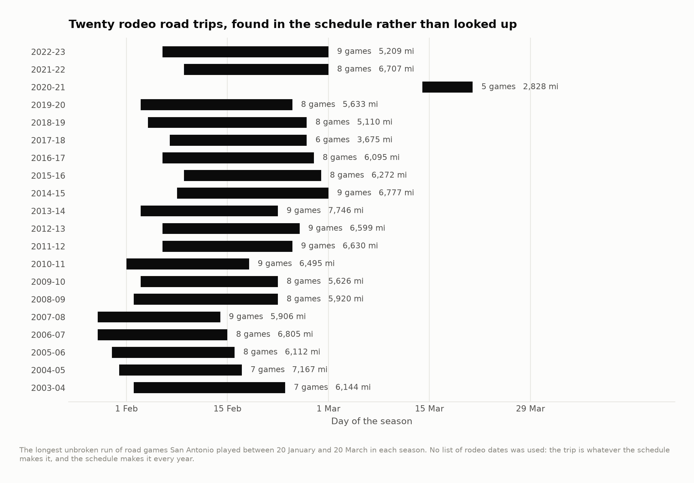

San Antonio's rodeo road trip: performance and close games
The rodeo trip is a useful scheduling case study: a long sequence of road games recurs for one franchise across many seasons. This project identifies the longest uninterrupted San Antonio road stretch between January 20 and March 20 in each season, then compares trip games with other road games.
That rule is a schedule proxy for the trip; it is not an independently verified list of rodeo dates. The sample covers 2003–04 through 2022–23.
Close-game comparison
| Split | Games | Win pct | Mean margin | Close games | Close win pct |
|---|---|---|---|---|---|
| On the rodeo trip | 160 | 0.581 | 1.425 | 43 | 0.605 |
| Other road games | 636 | 0.536 | 1.602 | 187 | 0.471 |
Source: close_games.csv.
A close game is defined here as a final margin of five points or fewer, not the NBA's time-and-score definition of clutch play. The revised pipeline carries the original score margin throughout. Reconstructing margin from a floating-point efficiency statistic could turn exactly five into slightly more than five and wrongly exclude the game.
This comparison is descriptive. The close-game sample is small, and selecting games by final margin is not a causal test of travel or coaching.
Adjusted trip association
| Term | Coefficient | Standard error | Label | t statistic | 95% lower | 95% upper |
|---|---|---|---|---|---|---|
| d_rest0 | -1.521 | 0.348 | No rest (back-to-back) | -4.373 | -2.203 | -0.839 |
| d_rest1 | 0.218 | 0.320 | One day off | 0.681 | -0.409 | 0.845 |
| d_rest2 | 0.146 | 0.330 | Two days off | 0.443 | -0.500 | 0.792 |
| d_miles | 0.311 | 0.195 | Travel, per 1,000 miles | 1.592 | -0.072 | 0.694 |
| d_tz | -0.320 | 0.145 | Time zones crossed | -2.201 | -0.605 | -0.035 |
| d_games7 | -0.374 | 0.121 | Games in the past week | -3.090 | -0.611 | -0.137 |
| d_alt | -2.130 | 0.486 | Playing at altitude | -4.379 | -3.084 | -1.177 |
| d_road | 0.099 | 0.069 | Nth straight road game | 1.436 | -0.036 | 0.235 |
| d_trip | 0.156 | 0.296 | On a long road trip | 0.526 | -0.424 | 0.735 |
| d_after | -0.132 | 0.283 | First games back after one | -0.466 | -0.688 | 0.423 |
Source: trip_effect.csv.
The regression controls for team-season strength and observed schedule features such as rest and travel. These adjustments do not randomize which games fall on the trip. Injuries, rotation changes, opponent availability and unmeasured travel differences can remain.

The sensitivity results and expected-performance comparisons are retained alongside the headline tables. A historical win-rate difference does not by itself show that the trip creates team cohesion or causes a performance benefit.
Basketball use
This is a reproducible example of turning a recurring scheduling question into a game-level comparison, checking the actual score boundaries, and distinguishing raw outcomes from model-adjusted associations. For operational use, add verified travel itineraries and availability information, then report a range of plausible burdens rather than a guaranteed win cost.
Reproduce
The historical analysis used Python 3.12 with the pinned dependencies below. From this repository:
python3.12 -m venv .venv
source .venv/bin/activate
python -m pip install -r requirements.txt
make fetch-data PY=python
make all PY=python
make report site PY=python
make all verifies source hashes before running the analyses in order. A missing or changed input stops the build. Data downloads need network access; article rendering uses the included result tables. See the source manifest, method notes and current validation record for the distinction between a source rebuild and checks of delivered outputs.
Season keys in CSV files use the ending year: 2025 means 2024–25. Display tables use full season labels. The MIT license covers code; third-party data retain their providers' rights and terms.